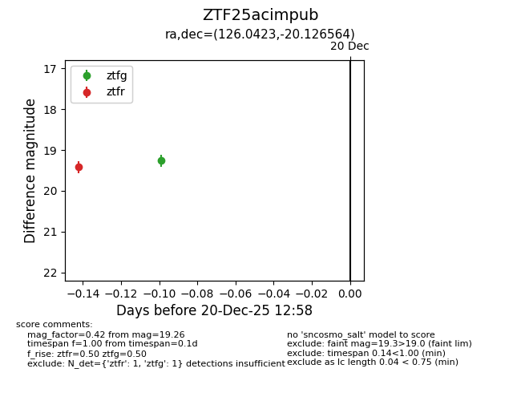
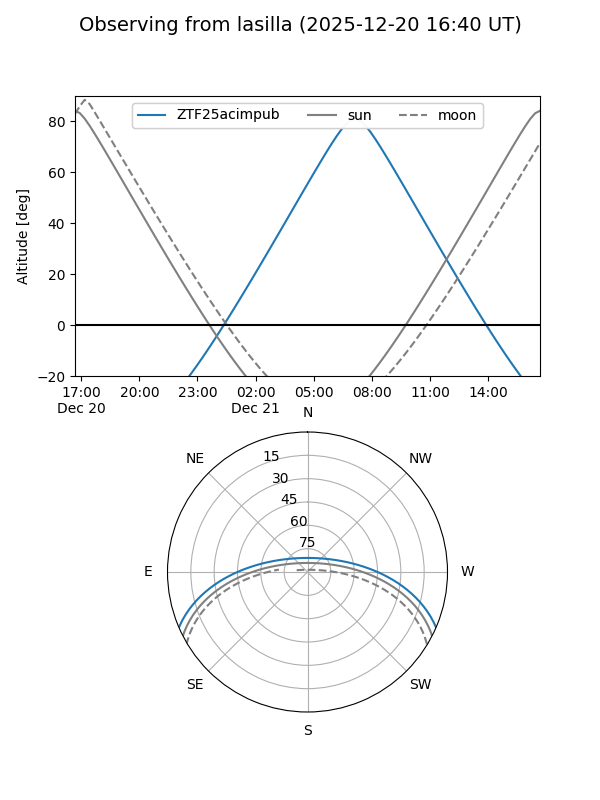
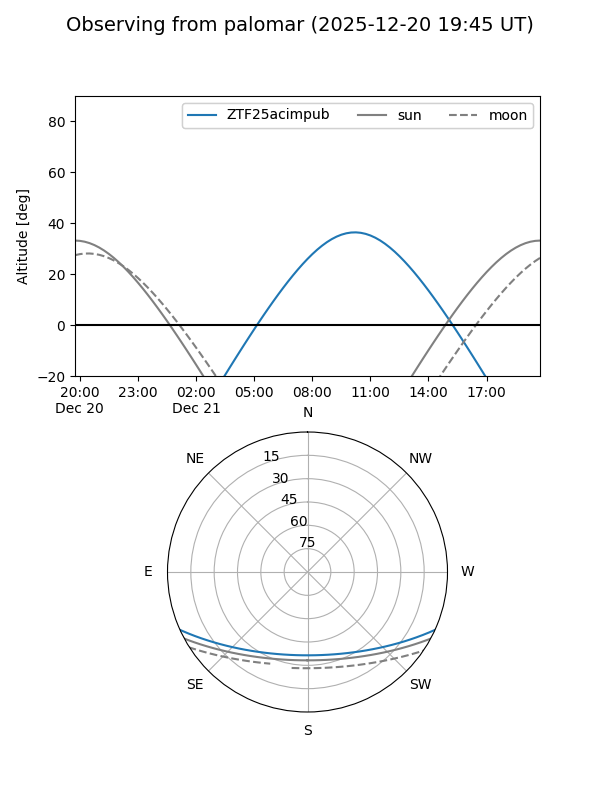

ZTF25acimpub
Target ZTF25acimpub at 2025-12-21 11:44
Aliases and brokers:
FINK: fink-portal.org/ZTF25acimpub
Lasair: lasair-ztf.lsst.ac.uk/objects/ZTF25acimpub
ALeRCE: alerce.online/object/ZTF25acimpub
alt names
ZTF25acimpub (ztf,fink_ztf)
Coordinates:
equatorial (ra, dec) = 126.0423,-20.12656
equatorial (HMS+DMS) = 08:24:10.16,-20:07:35.63
galactic (l, b) = (241.7463,+9.90776)
Flags:
Photometry:
last ztfg=19.21, ztfr=19.42
2 ztfg, 1 ztfr detections
Lightcurve

Visibility


Additional plots